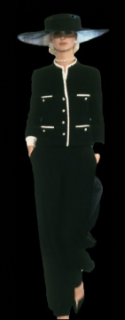
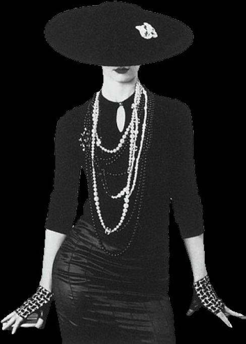
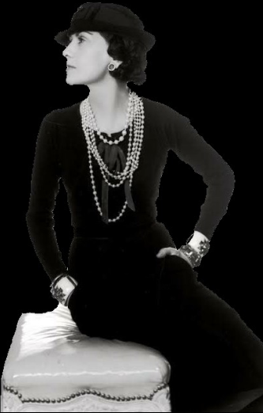

Coco Chanel - Maison Chanel
Coco Chanel libère la femme des corsets et impose un style simple, chic et intemporel. Elle est à l’origine du tailleur en tweed, de la petite robe noire et du parfum Chanel N°5, devenus des symboles du luxe français.



